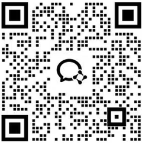

供应链风险管控Supply Chain Risk Management
核实供应商注册信息、股权与经营状况、信用记录、诉讼与不良记录，覆盖寻源审查、品质筛查、流程核查全过程风险排查。Verification of a supplier's registration, ownership, credit and litigation records, with risk screening across sourcing, quality and process review.
从供应链到知识产权，从投资决策到市场洞察——佑信的五大业务板块各自独立，亦可依项目所需组合交付。From the supply chain to intellectual property, from investment decisions to market insight — our five service lines stand on their own, or combine as a project requires.
核实供应商注册信息、股权与经营状况、信用记录、诉讼与不良记录，覆盖寻源审查、品质筛查、流程核查全过程风险排查。Verification of a supplier's registration, ownership, credit and litigation records, with risk screening across sourcing, quality and process review.
针对商标仿冒、专利侵权与商业秘密外流，提供取证与溯源支持，协助企业守护核心资产。Evidence collection and source-tracing support against counterfeiting, patent infringement and trade-secret leaks — protecting what a business has built.
企业内舞弊事件多数并非孤立事件，也很少主动浮出水面；我们在严格保密的前提下并与委托方充分沟通，助力公司把控合规风险。Internal fraud is rarely an isolated incident, and it seldom comes to light on its own. Working under strict confidentiality and close coordination with the client, we help companies get ahead of compliance risk.
面向投资机构，从个人层面与公司层面双维度评估目标企业与核心管理层，识别个人、治理与经营三类风险。A dual-lens assessment of key individuals and target companies for investors — covering personal, governance and operating risk.
为集团公司、金融机构、互联网企业提供用户研究、企业调研、行业研究与竞争对手分析。User research, enterprise research, industry research and competitor analysis for corporations, financial institutions and internet companies.
供应链、合规、投资与市场风险往往相互交织，具体方案通常需要结合项目背景判断，也可由多项服务组合交付。Supply-chain, compliance, investment and market risk are rarely isolated. The right approach usually depends on context, and services can be combined accordingly.
无论涉及供应商背调、合规调查，还是投资尽职调查与市场研究，欢迎与我们联系。我们通常会在了解具体背景后，再建议合适的调查方案。Whether the matter involves a supplier check, a compliance investigation, or investment due diligence, we typically propose an approach only once we understand the specifics.

扫码添加，快速沟通Scan to connect instantly